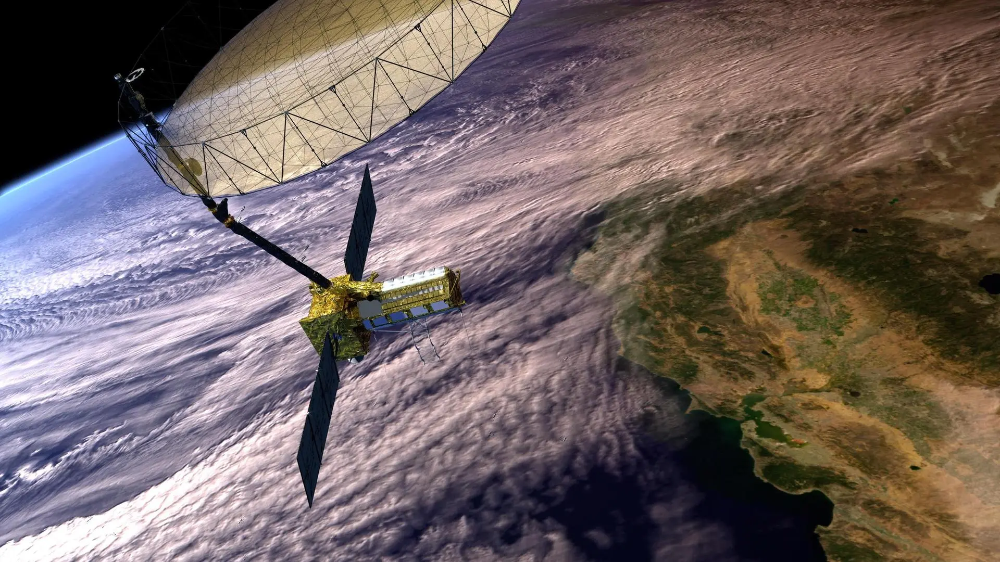

The satellites that feed India and map it. Resourcesat monitors 140 million farming households. Cartosat produces maps sharper than Google's in places Google has never photographed. Together they are the eyes through which India sees itself — from 500 km above.
Watch: PSLV LaunchThe Resourcesat and Cartosat series are ISRO's Earth observation workhorses — sun-synchronous orbit satellites that photograph every part of India repeatedly, building a continuously updated picture of the nation's land, water, agriculture, forests, and urban areas.
Resourcesat carries multispectral cameras that see in wavelengths invisible to the human eye — detecting crop health, soil moisture, and vegetation stress signals that farmers and agricultural planners cannot see from the ground. Cartosat carries high-resolution panchromatic cameras that produce maps and elevation models with sub-metre accuracy — used for city planning, infrastructure development, border management, and disaster response.
Together, they represent India's sovereign remote sensing capability — the ability to observe India's own territory without depending on data from foreign satellites, with data that is directly used by government ministries, agricultural agencies, disaster management authorities, and defence establishments every day.
Resourcesat satellites carry the LISS (Linear Imaging Self-Scanner) family of sensors — multispectral cameras that image in green, red, near-infrared, and shortwave infrared bands. These wavelengths reveal information invisible to the eye: near-infrared reflects strongly from healthy vegetation and poorly from stressed or diseased crops; shortwave infrared detects soil moisture.
Resourcesat data feeds India's National Agricultural Drought Assessment and Monitoring System (NADAMS), Crop Acreage and Production Estimation (CAPE), and the National Wasteland Mapping project. Every year, ISRO produces national crop area and yield estimates using Resourcesat data — contributing directly to food security planning.
Resourcesat-2A (2016) provides 5.8m resolution multispectral data with a 140 km swath — covering all of India's agricultural land every 24 days. The EOS-04 (Resourcesat's radar successor) adds all-weather capability, seeing through monsoon clouds that block optical sensors. Newer ISRO Earth observation satellites incorporate the Red Edge spectral band (approximately 700–740 nm wavelength) — the "holy grail" for precision agriculture. The red edge is the narrow wavelength region where plant reflectance transitions sharply from red absorption to near-infrared reflection. A healthy, chlorophyll-rich leaf has a steep, pronounced red edge. A stressed or diseased plant shows a flattened, shifted red edge — detectable by satellite before any visible yellowing appears. This allows early intervention, potentially saving an entire crop harvest from a disease or drought stress event before it becomes visible to the farmer on the ground.
The Cartosat series is India's high-resolution mapping constellation — each generation sharper than the last. Cartosat-1 (2005) produced 2.5m panchromatic images for topographic mapping. Cartosat-2 series achieved 0.65m. Cartosat-3 (2019) achieved 0.25m — sharp enough to identify individual vehicles on a road. The technology behind this extraordinary resolution is TDI (Time Delay Integration) sensors. As the satellite moves over the target at 7.8 km/s, a conventional sensor has only microseconds to collect light from any given spot — producing dark, noisy images at high resolution. TDI solves this by using multiple sensor rows that each capture the same patch of ground in sequence, adding their signals together — effectively making the camera "stare" at each spot longer as the satellite zooms past. The result: high-resolution images with sufficient brightness and clarity to resolve a 25cm object from 500 km altitude.
Cartosat data is the foundation of India's national GIS (Geographic Information System) — used by the Survey of India for topographic maps, by state governments for land records and urban planning, by NHAI for highway routing, by the Indian Army for terrain analysis, and by NDMA for flood inundation mapping.
India's satellite-based mapping capability means the Survey of India no longer needs to rely exclusively on slow, expensive ground surveys for most mapping tasks. A satellite pass produces more data about India's terrain in one day than ground teams could collect in years.